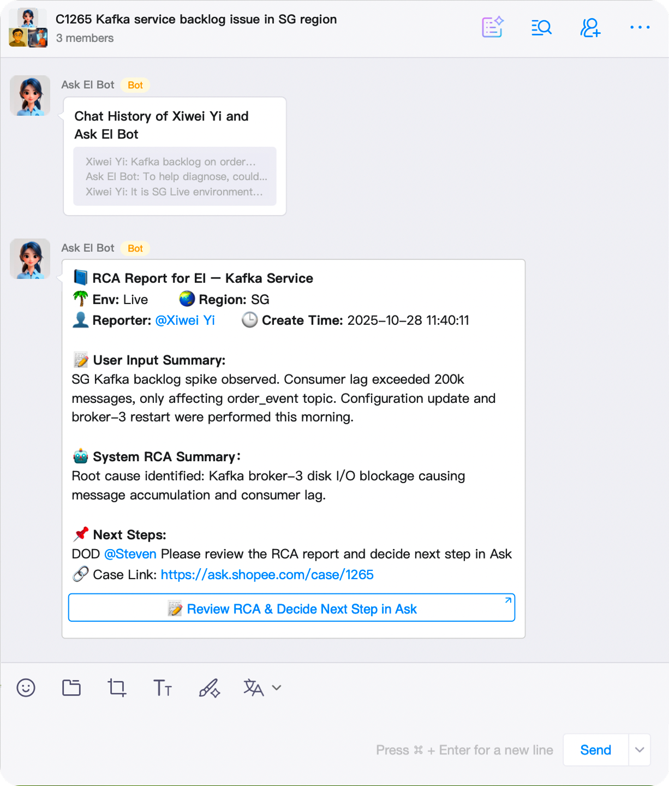
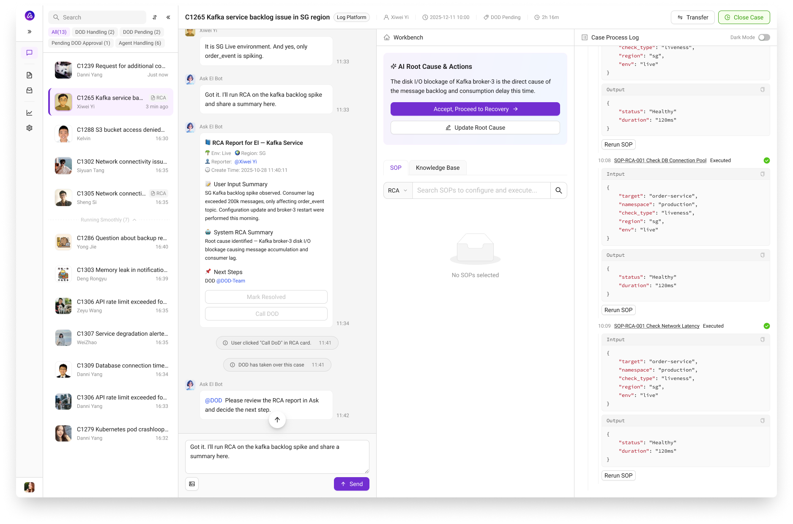
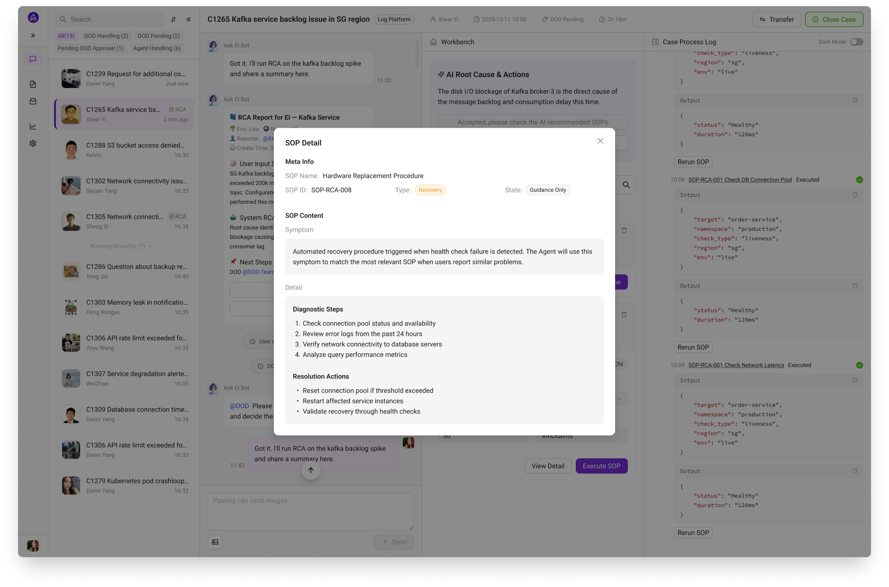
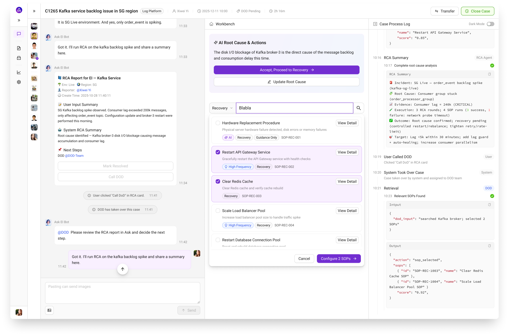
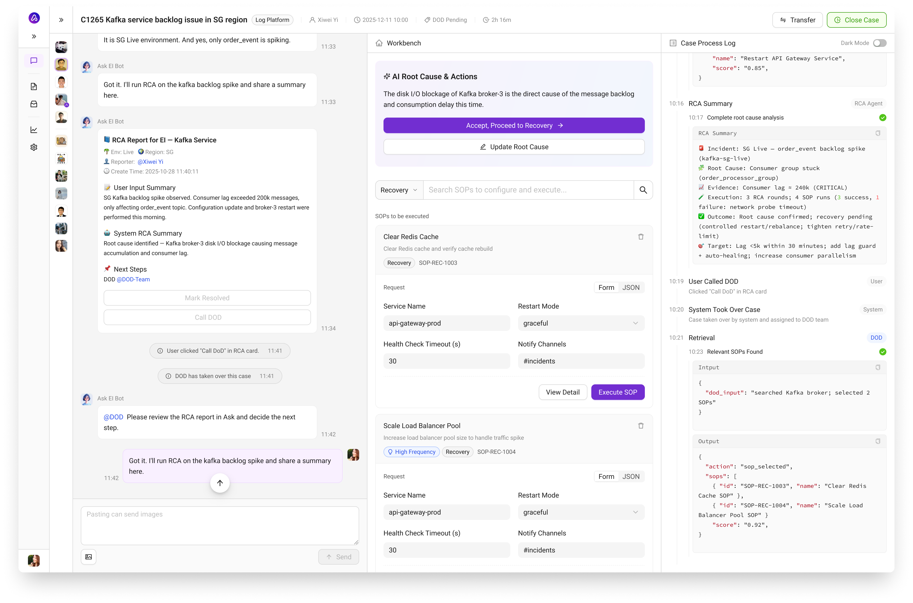
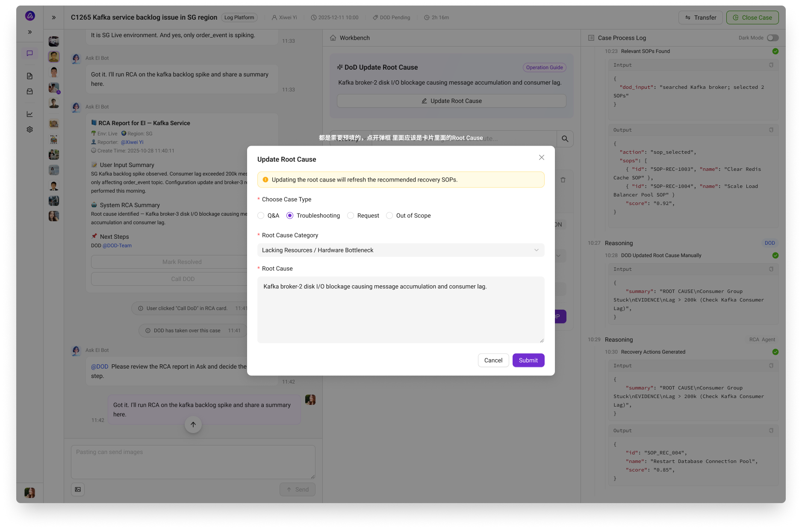
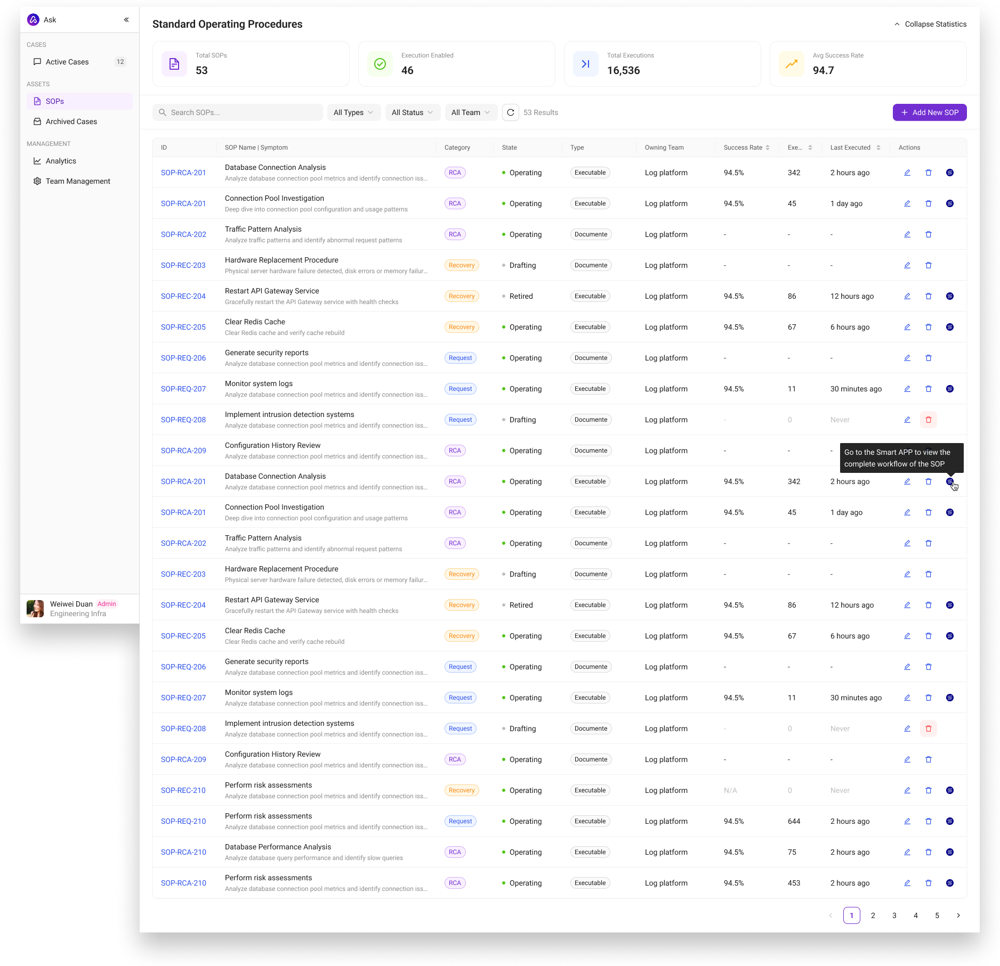
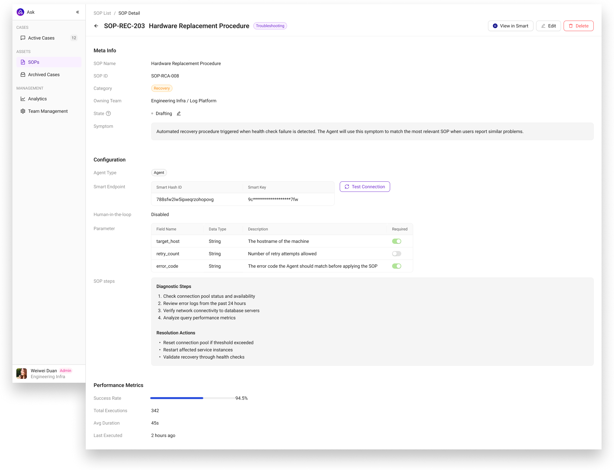

01 / Taking over + first version
Building the whole picture in three days
When I took over Ask, there were three days left before a major review. The requirements were scattered across several TPMs, and no single document tied the main roles and flow together. I went to each of them, sketching low-fidelity frames as we talked, and filled in the missing links: who raises the issue, how far the AI gets on its own, and where the on-call engineer steps in.
Three days isn't enough to hand-draw a large product page by page and hold the quality. So I built a runnable, interactive high-fidelity prototype in Figma Make — about a thousand rounds of conversation. The first version was done in three days, and by the time product and engineering leads reviewed it, they could click through the whole flow.
Three clips from the first demo
Open the cases that need attention
A multi-case entry: the cases that need attention, in one place.
Review the case context
Entering a case brings the earlier conversation along.
Browse the SOP catalog
The AI's capabilities, organized into a browsable catalog.

02 / Live work vs. after-the-fact work
It passed review — Debug still had to be redone
At the CTO demo, the Debug flow was called out: it didn't match how on-call engineers actually work. The first version had already passed product and engineering review. Being able to demo a flow isn't the same as being able to take on real work.
In hindsight, the problem wasn't any single button. On-call engineers solve users' problems — they don't help the AI get better. That's a different job, with different incentives. The first version had them walk the AI's execution tree, inspect nodes, flag issues, and pick SOPs — which pushed 'improving the AI' into 'solving the problem.' So I moved the focus back to what the expert is actually doing: accept the root cause or not, take the recommended plan or not, keep investigating on their own. Improving the AI went into a separate, after-the-fact workspace. Live resolution and retrospective improvement are two kinds of work — and they can be decoupled.

The adjusted flow then went into expert interviews, and after several rounds became the Active Case workbench below.
03 / One request's full path
From one request to the expert's workbench
- User reportsdescribes the problem in chat.
- AI analyzes & suggestsasks about environment and blast radius, returns a root-cause report.
- Expert steps inapproves, corrects, or takes over; judgment stays with the expert.
- Execute & confirmAI runs the resolution; the requester confirms the result.
- After-the-fact reviewmaintainers review and improve from the deviations.
One request's full path — AI handles the critical steps, a person steps in, and once resolved, the experience flows back.
One request travels this path. The user raises a problem in chat; Ask asks about environment, region, and blast radius, then returns a root-cause analysis (RCA). When an on-call engineer is needed, the conversation and report move together into a collaboration group, and the engineer enters the workbench with the full context. On the user's side, four screens tell the story:




The workbench puts three things in front of you at once: the user's description on the left, the current judgment and actions in the middle, and the execution trail on the right. Understanding the situation, deciding the next step, and checking what happened — all in one view.
04 / Judgment and collaboration shape the flow
The flow follows how experts judge and collaborate
After an on-call engineer reads the report, there's more than 'accept' or 'reject.' I broke resolution into several paths that can keep moving forward. If the root cause holds, accept the diagnosis first, then review the recommended recovery plan, check the steps and parameters, and decide whether to execute. Accepting a diagnosis is not the same as authorizing the recovery; marking a manual guide 'done' is not the same as a system execution.
Accept the root cause, then check and run the plan
Accept the root cause first
Only after Accept does the agent show a recovery plan.

Read the SOP detail
Check steps and parameters before deciding to execute.

Marking a manual guide done
Guidance uses Done; executable SOPs use Execute.

When the root cause holds but the recommended plan doesn't fit, keep the diagnosis and search for a different recovery SOP. When even the root cause doesn't hold, the engineer can pick a diagnostic SOP, check the inputs, run it, and read the result from the process logs — without first accepting a wrong conclusion.
Root cause holds, swap the recovery plan
Search again for an SOP
Keep the diagnosis, search other recovery plans.

Configure parameters
Choosing isn't executing; you still configure it.

Disagree with the root cause, keep investigating
Choose the diagnostic type
Switch to diagnostic SOPs.

Pick a diagnostic SOP
Multiple selection supported.
Watch it run
Stop while running; review inputs and outputs after.

There's one more case: the engineer has already found the cause. They can update the root cause directly, and the agent re-recommends a recovery plan from the new information — the person doesn't have to rewind the whole flow; what's already confirmed keeps being used.
Already found the cause — correct the conclusion directly
Edit the root cause
Update the conclusion first, then see the new recovery.

New recovery suggestion
The agent re-recommends from the updated source.

When an issue spans teams, one on-call engineer may not have the answer alone. I designed a cross-team consultation entry that invites each team's on-call engineer with a case summary; each participant records their team's judgment and status, can still edit after submitting, and changes sync back into the conversation. Who has ruled out their team and who has completed a fix — all visible in one place.
Invite, fill in, submit, and track across teams
Invite multiple on-call engineers
Invite each team's on-call engineer with a case summary.
Filling in
Each participant records their team's judgment and status.

Submitted
Editable after submitting; changes sync to the conversation.
Progress across teams
Who ruled out their team, who completed the fix — one view.

View the requester's confirmation

05 / Reading deviations after the fact
Resolved isn't the end — someone has to read the deviations
After the on-call engineer marks it done, the requester still confirms whether the issue is resolved. At close, alongside the root cause and resolution, I kept a record of whether anything was handled manually outside Ask. Solving one problem means knowing where the AI helped — and where a person still had to carry it.
This is where 'live vs. after-the-fact' lands. The person on call solves the problem; making the AI better is a different job, done later by dedicated people. So review doesn't fall on the on-call engineer: the resolution path, deviations, and manual fixes stay in the case record, so maintainers can see later where the AI judged wrong and what a person had to add.
Labels and deviations, left for the after-the-fact team
Cases worth optimizing
Case Optimization defaults to the first annotatable case.
Expand the detail
Open the full resolution path.

System-flagged deviations
The system flags what needs review; a person confirms.

View the on-call labeling reference

06 / Assets must be callable — and maintainable
Resolution knowledge has to be callable, and maintainable
The AI's capabilities come from the SOP catalog: type, purpose, status, and owning team are all in the catalog; adding an SOP splits into two paths — executable SOPs and manual documents. On-call engineers use SOPs in the moment; maintainers update them later. Same asset, two uses, two entry points.
The SOP catalog and detail
Catalog
Type, purpose, status, and owning team, all in the catalog.

Detail
When it applies, how it's called, parameters, and human-confirmation settings.

Two paths for adding an SOP
Choose the path
Executable or manual document — the two paths split here.

Executable branch
Connect to Smart, parameters, and human-confirmation settings.

Manual document branch
Instructions for steps handled outside Ask.

Base info and status
Shared base fields and draft/available states for both.

07 / How SOPs execute
Executable SOPs run on Smart.
Smart is the team's existing AI app-building platform for agents and workflows: start from an agent, connect nodes on one canvas, or reuse a published agent; test each node before wiring it in.
Ask's executable SOPs use Smart's workflow mode to lay out 'what to do' as a node flow, add parameters and human confirmation, and let Ask call it directly. Ask didn't build its own execution engine — it used the team's existing Smart.
Four screens from the AI build platform
Create an agent
Start from a prompt.

Multi-node orchestration
Connect nodes on one canvas.
Use a published agent
SOPs can reuse agents that are already published.

My role in Smart was on the design-system side: guiding theming and co-building business components with the project designer; front-line requirements and page design belonged to the project designer.
Ask's SOPs and Smart's workflow mode are both intermediate forms from when models weren't strong enough: orchestration organizes capability so things can run. When models can plan on their own, this layer gets absorbed or reshaped — it's not the endpoint, just the best layer available at the time. I wrote this up in the essay 'When models plan on their own.'
08 / Turning the prototype into assets
From prototype to maintainable assets
Once the design stabilized, I moved every page from Figma Make back into regular Figma — pages, business components, InfraD variables, and theming — so the team could keep editing them. Make generates Figma's own front-end output, which didn't meet the company's production requirements; but it's what let me build a runnable first version in three days and get the product definition moving. At the time, no designer at the company had produced a runnable large-product prototype this way. The intermediate form wasn't wasted: it let things run first, and it gave the final hand-off assets a concrete shape.
View the design file moved back to Figma

Some files reference internal company information; they can be discussed in an interview with sanitized material.